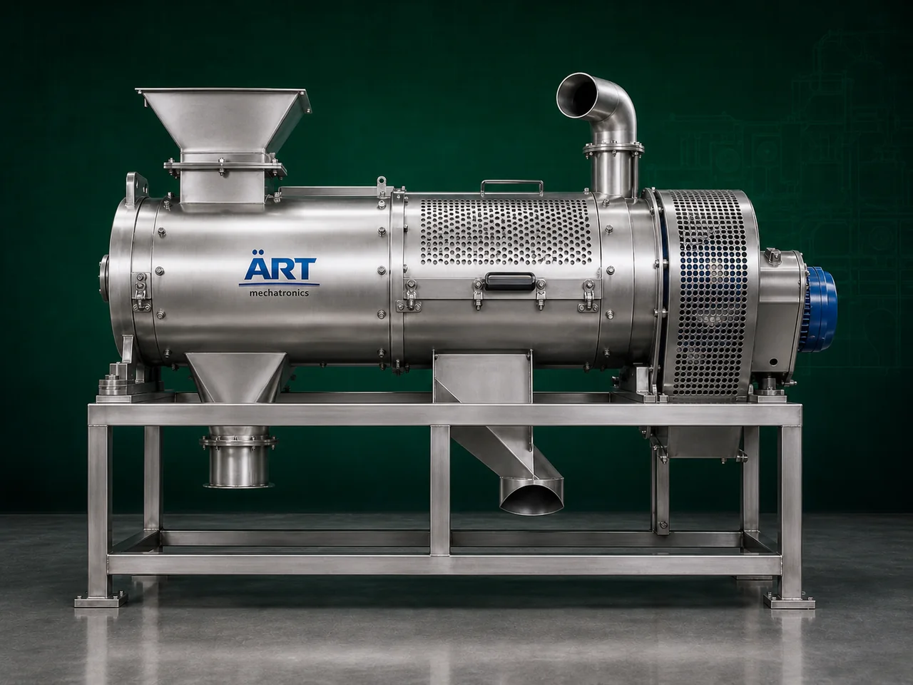

Scourer Machine (Industrial Grain, Seed & Surface Cleaning System)
A Scourer Machine, also known as a Grain Scourer, Seed Scourer, or Industrial Surface Cleaning Machine, is a specialized industrial cleaning equipment designed for removing dust, mud, husk, outer coatings, adhering impurities, insect contamination, and surface contaminants from grains, seeds,…

About the Scourer Machine
The machine performs an intensive surface cleaning and polishing action using: ✔ Friction ✔ Abrasion ✔ Rotational agitation ✔ Air aspiration
to improve: ✔ Product cleanliness ✔ Product hygiene ✔ Final product appearance ✔ Storage quality ✔ Processing efficiency
Scourer machines are widely used in industries such as:
• Flour mills
• Grain processing plants
• Rice mills
• Pulses industries
• Seed processing units
• Spice industries
• Food processing plants
where deep cleaning and surface impurity removal are essential before further processing.
The machine is especially suitable for: ✔ Wheat cleaning ✔ Rice surface cleaning ✔ Pulse cleaning ✔ Seed polishing ✔ Spice cleaning ✔ Agro product preparation
ART Mechatronics offers high-performance scourer machines, engineered for efficient surface cleaning, continuous operation, low maintenance, and reliable industrial performance.
One machine, many names
Buyers search for this equipment under many terms — we manufacture all of them:
Working Principle of Scourer Machine
Removes surface impurities and adhering dust
are separated effectively
Types of Scourer Machines
- 1. Vertical Scourer Machine
Designed for: ✔ Compact industrial installations ✔ Continuous grain cleaning operations
- 2. Horizontal Scourer Machine
Suitable for: ✔ High-capacity industrial processing plants
- 3. Wheat Scourer Machine
Specially designed for: ✔ Wheat cleaning before flour milling
- 4. Pulse Scourer Machine
Used for: ✔ Dal and pulse surface cleaning
- 5. Seed Scourer Machine
Suitable for: ✔ Seed preparation and polishing applications
- 6. Intensive Friction Scourer
Provides: ✔ High-level surface cleaning ✔ Deep impurity removal
Industries Using Scourer Machine
🌾 Flour Mill Industry
- Wheat cleaning before grinding
🍚 Rice Processing Industry
- Rice surface cleaning
🍃 Pulses Industry
- Dal polishing and cleaning
🌱 Seed Processing Industry
- Seed cleaning and preparation
🌶️ Spice Industry
- Spice surface impurity removal
🍃 Food Processing Industry
- Raw material purification
🐄 Feed Industry
- Feed ingredient cleaning
Features & Advantages
✔ Efficient surface cleaning and polishing ✔ Removes adhering impurities and dust ✔ Improves product hygiene and quality ✔ Enhances storage life of products ✔ Continuous industrial operation ✔ Integrated air aspiration system ✔ Heavy-duty industrial construction ✔ Low maintenance requirement ✔ Energy-efficient operation
Technical Highlights
- Cleaning Type:
- Friction cleaning
- Abrasion cleaning
- Air aspiration
- Construction: Stainless Steel / Mild Steel
- Orientation:
- Vertical
- Horizontal
- Dust Removal:
- Integrated blower and aspiration system
- Capacity: Small to large industrial throughput
- Operation:
- Manual
- Semi-automatic
- Fully automatic
Turnkey Cleaning Solutions
ART Mechatronics offers:
- Complete scourer and cleaning systems
- Dust collection integration
- Multi-stage grain cleaning plants
- Conveying and handling systems
- Installation & commissioning
- After-sales service & AMC
Why Choose Art Mechatronics
- Expertise in industrial grain cleaning systems
- Customized solutions for food and agro industries
- High-performance and durable machine construction
- Energy-efficient and reliable industrial designs
- Proven industrial performance across sectors
Applications
- Flour Mills
- Rice Mills
- Grain Processing Plants
- Pulse Processing Industries
- Seed Processing Units
- Food Manufacturing Facilities
Related Cleaning, Sorting & Grading machines
Get pricing & specs for the Scourer Machine
Share the product, target capacity, current process and plant location. These details help our engineers discuss the right machine or line configuration.
One partner, from design to start-up
ART Mechatronics designs, manufactures, installs and commissions your Scourer Machine solution with regional presence in India, UAE and Thailand.